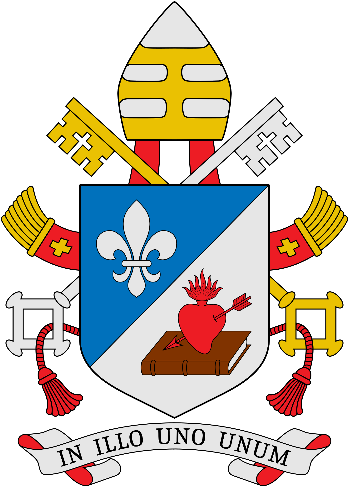

“Me preguntas por un método para alcanzar la perfección. Yo conozco el amor y solo el amor.”
— Santa Teresita del Niño Jesús
Sobre EPCA…
Canales católicos…
Páginas Católicas Recomendadas
PAPA LEÓN XIV